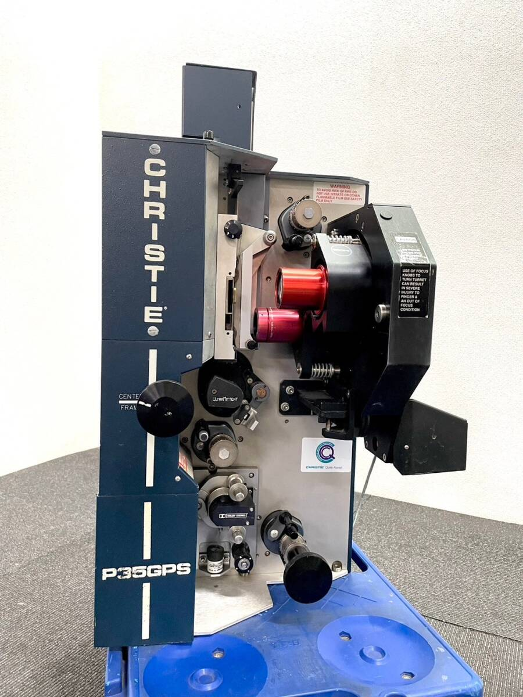
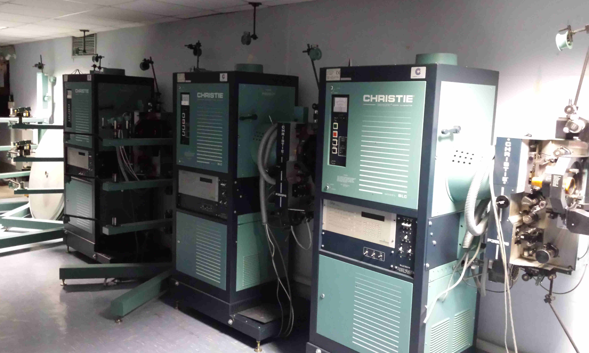
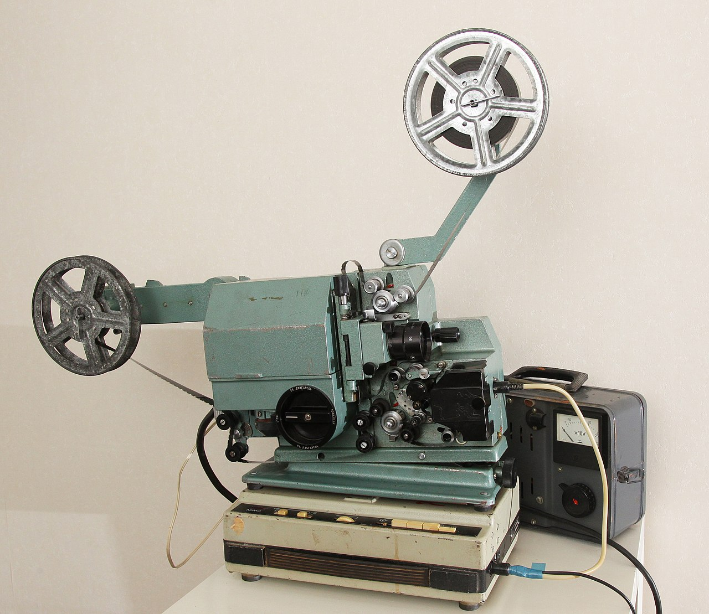
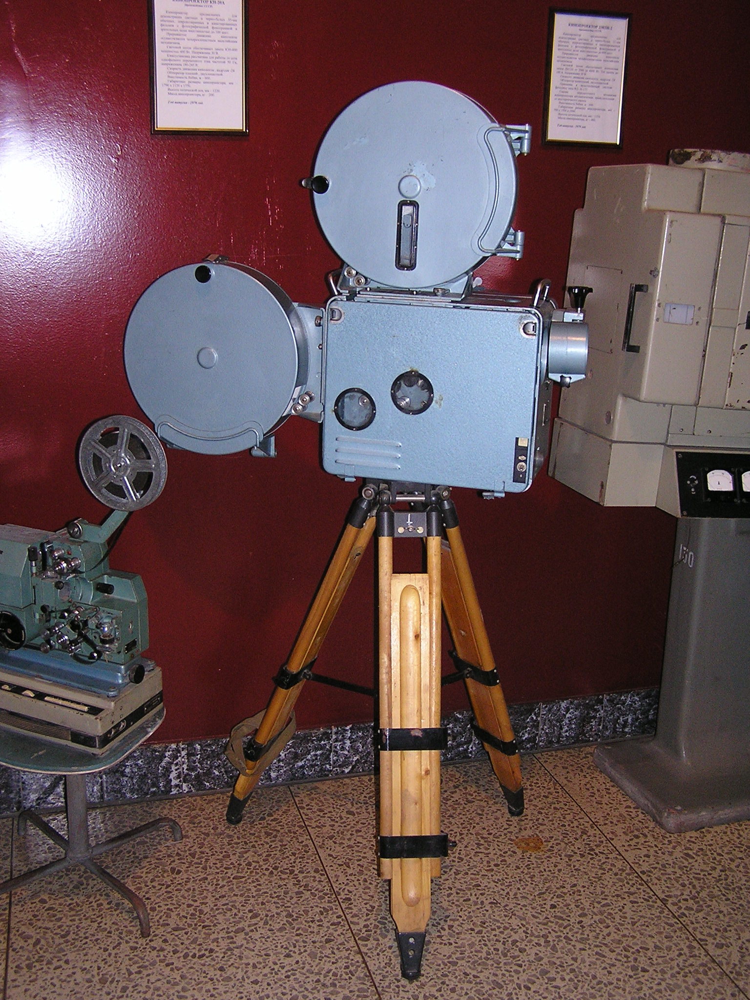
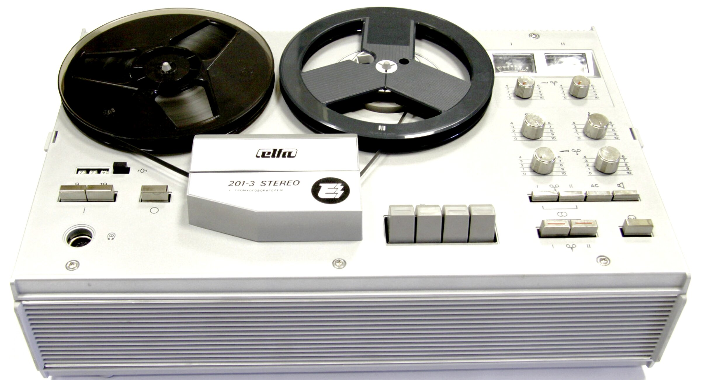
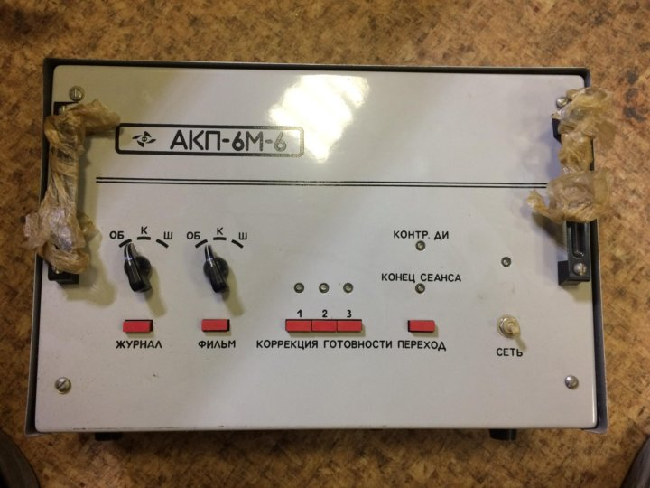
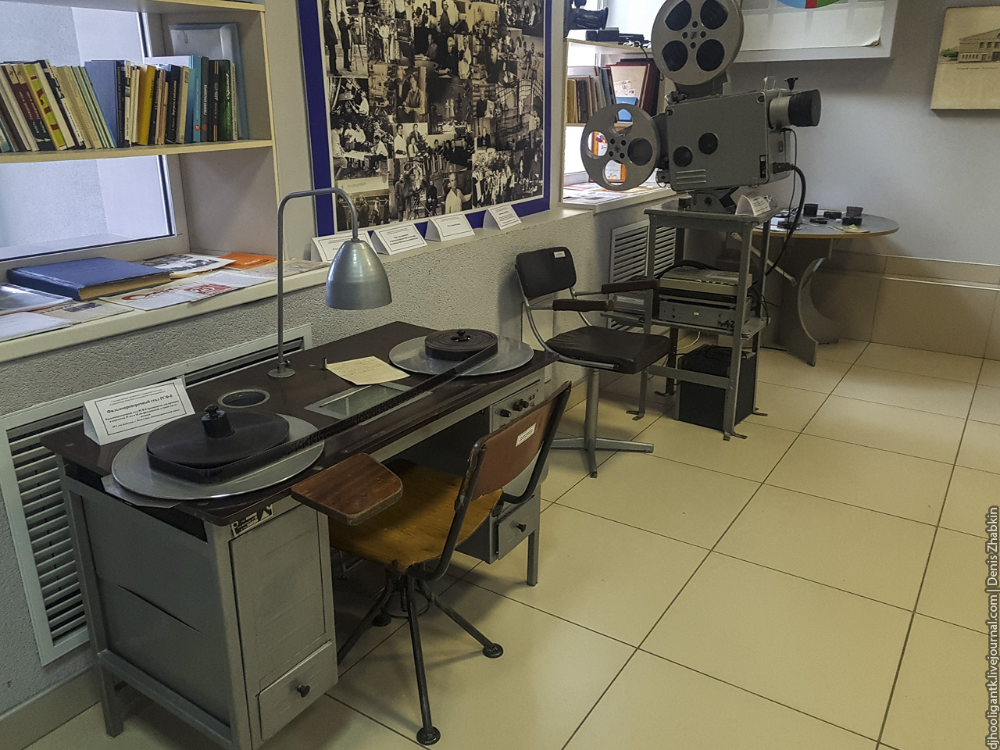
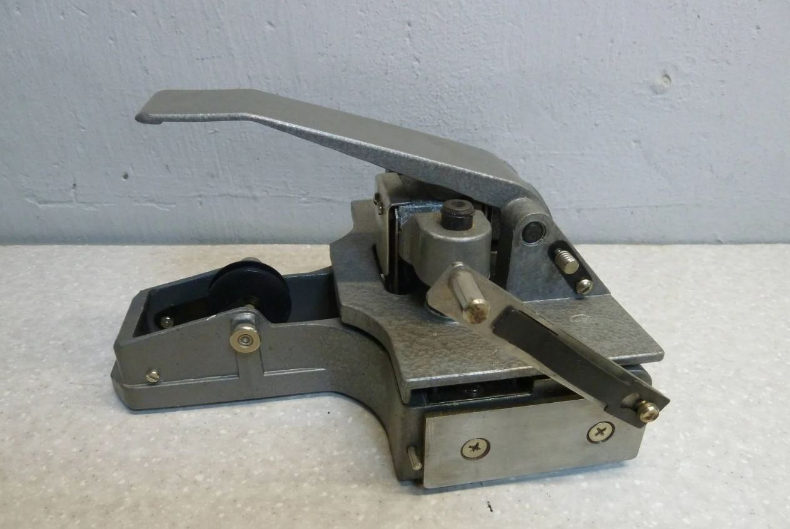

Цифровая Экспозиция
Погрузитесь в атмосферу классического кинематографа. Откройте для себя редкие экспонаты, которые хранят историю великих фильмов и их создателей.
Начать ПросмотрНажмите на карточку, чтобы узнать больше

1990–2000-е годы

1990–2000-е годы

1970–1980-е годы

1985–1991 годы

1986 год

1980-е годы

1960-е годы

1970–1980-е годы
1990–2000-е годы
Профессиональный 35-мм плёночный кинопроектор — гордость коммерческих кинотеатров эпохи последних лет киноплёнки. Сердце машины — механизм Ultramittent©: запатентованная система с герметичным подшипником, благодаря которой каждый кадр появлялся на экране без малейшего дрожания.
Совместим с ксеноновыми лампами мощностью до 35 000 люмен и поддерживает цифровой звук Dolby Digital и DTS. Когда индустрия перешла на «цифру», такие проекторы стали символом ушедшей эпохи плёнки.
Этот экземпляр сохранился в рабочем состоянии — редкость для техники такого класса.
1990–2000-е годы
Оптические блоки (плоттеры) — сменные линзы и звуковые головки для кинопроектора Christie P35GPS. Именно через них проходил свет, превращая 35-мм кадр в изображение на большом экране.
Набор головок позволял читать как аналоговые, так и цифровые звуковые дорожки — от классической оптической фонограммы до Dolby Digital.
Каждый плоттер тщательно откалиброван для конкретного формата и размера зала. Без этих компонентов даже самый мощный проектор оставался бы немым.
1970–1980-е годы · Одесса, СССР
Советская «кинопередвижка», объехавшая тысячи сёл, школ и заводских клубов. Этот компактный 16-мм проектор был создан в Одессе, чтобы доставить кино туда, где не было стационарных кинотеатров.
Работал с оптической и магнитной фонограммой, легко разбирался для переноски. Скорость — стандартные 24 кадра в секунду, световой поток — около 400 люмен.
Негромкий герой, который подарил «большое кино» миллионам советских зрителей в самых далёких уголках страны.
1985–1991 годы
Последний из серии легендарных советских «передвижек» КН, выпускавшейся с 1956 по 1991 год. Работал с полноценной 35-мм плёнкой в залах до 150 мест: обычный, широкоэкранный и кашетированный форматы — всё было ему по плечу.
Буква «А» в названии означала автоматику: проектор умел бесшовно переключаться с одного поста на другой, не прерывая сеанс.
Верный помощник домов культуры и сельских клубов на протяжении десятилетий.
1986 год · Вильнюс, СССР
Катушечный магнитофон из Вильнюса — продукт завода «Эльфа», чья история началась ещё в послевоенные годы. Аппарат 2-й группы сложности: две скорости ленты, стерео и моно, диапазон частот до 20 000 Гц.
Весит 13 кг и выглядит монументально — настоящий инженерный артефакт советской эпохи.
Современники называли его «рабочей лошадкой»: надёжным, без лишних изысков, но неизменно точным в работе со звуком.
1980-е годы
Мозг советского кинотеатра. Этот прибор брал на себя всё: открывал занавес, гасил свет в зале, запускал проектор и переключал посты в нужный момент — по метке на плёнке.
При обрыве плёнки автоматически закрывал противопожарные заслонки и останавливал всё оборудование. Построен на надёжной релейной логике — десятилетиями работал без сбоев.
Один такой блок заменял целую бригаду техников.
1960-е годы
Рабочий стол реставратора кинопленки. РСФ — Реставрационно-Склеечный Фильмовый — название говорит само за себя. Через просветный экран с подсветкой мастер видел каждую царапину и порванную перфорацию.
Плавная регулировка скорости позволяла работать как в режиме тщательного осмотра, так и быстрой перемотки. Работал с плёнкой 35 мм и 16 мм.
Часто стоял в паре со склеечным прессом: вместе они возвращали к жизни повреждённые фильмокопии.
1970–1980-е годы · Завод «Кинодеталь», Минск
Инструмент, склеивший тысячи метров советского и мирового кино. Минский завод «Кинодеталь» выпускал эти прессы для монтажных и фильмопроверочных цехов по всей стране.
Принцип прост, но гениален: зубья точно фиксируют плёнку за перфорацию, встроенный нож делает ровный срез, прижим скрепляет место склейки. Клей — на основе ацетона, специальная лента заказывалась из Чехословакии.
Механизм настолько надёжен, что многие экземпляры работают до сих пор.
«Галерея Кино» — это цифровая экспозиция, посвящённая истории кинематографа и сохранению культурного наследия эпохи классического кино. Наша коллекция включает редкие экспонаты, каждый из которых рассказывает уникальную историю о развитии киноискусства.
Мы стремимся сделать историю кино доступной для всех, сочетая традиционный музейный подход с современными цифровыми технологиями. Каждый экспонат тщательно отобран и задокументирован нашими экспертами-киноведами.
Посетите нашу выставку, чтобы прикоснуться к магии золотой эры кинематографа и узнать, как создавались фильмы, которые навсегда изменили историю мирового искусства.